Projects
-
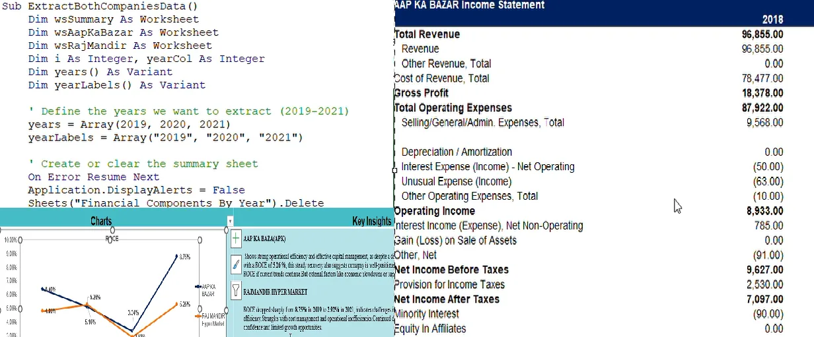
Automated Financial Analysis & Stakeholder Insights
Auto-extracts key financial metrics from financial statements via a VBA module and shows operational insights.
-

Amplitude Modulation
Wolfram Mathematica
-

Fundamental Solutions to Laplace Equation
Phenomena of electrostatics, heat transfer and fluid flow visualised as solutions to Laplace’s equation.
-
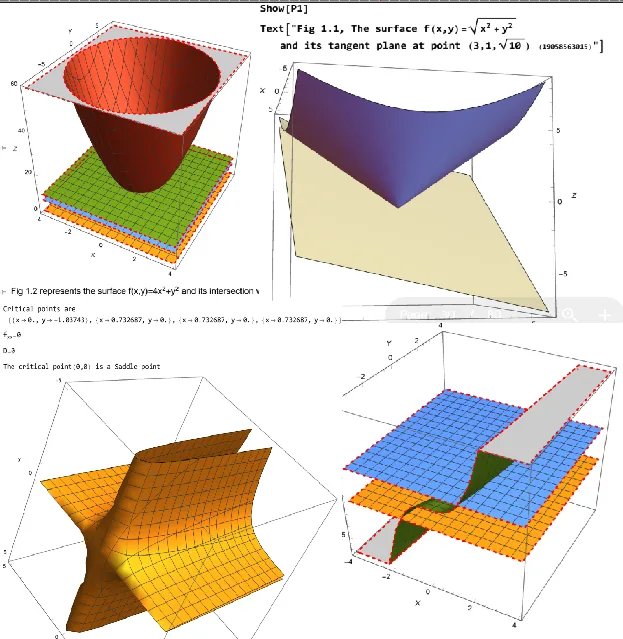
Mathematica Practicals: 3D Surfaces
Calculus practicals and experiments in Wolfram Mathematica.
-
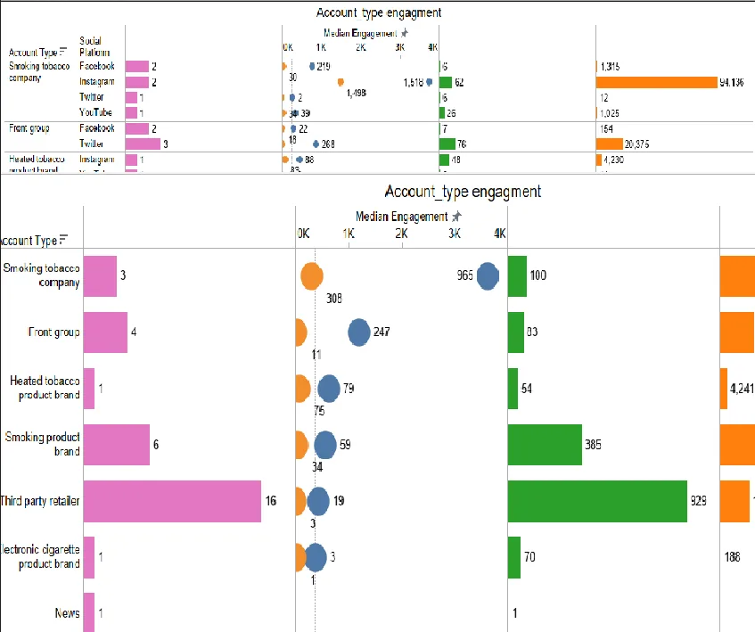
Engagement & Strategy Mapping Dashboard
A dynamic Tableau dashboard analysing one company’s marketing tactics, message framings, product categories, etc.
-
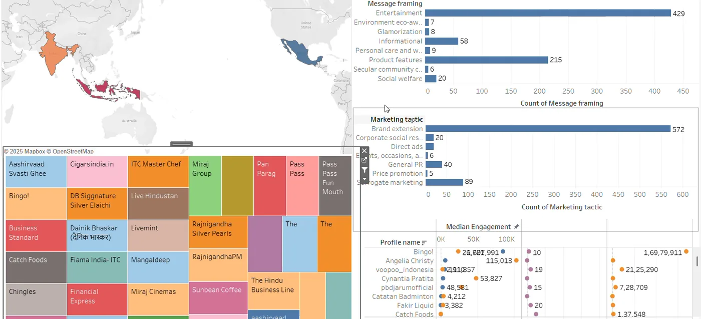
Interactive Dashboard for Market Behaviour
Tableau dashboard that automatically analyses market behaviour for any uploaded dataset.
-

Tableau QA-QC TERM
Your data, instantly intelligent. This isn’t just a report — it’s an interactive exploration.
-
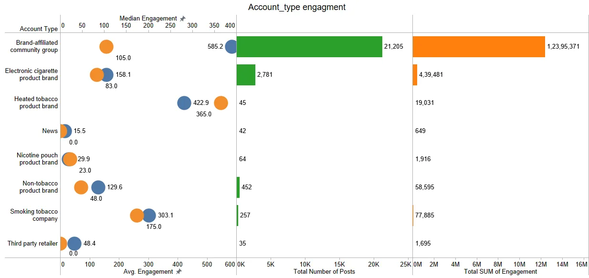
Consumer Engagement Measurement System
Measurement in illicit trade by quantifying consumer interaction and tactic exposure using average and median engagement.
-

AI Financial Document Processing (MUJ Hackathon)
OCR pipeline in R that reads, classifies and summarises scanned financial documents.
-
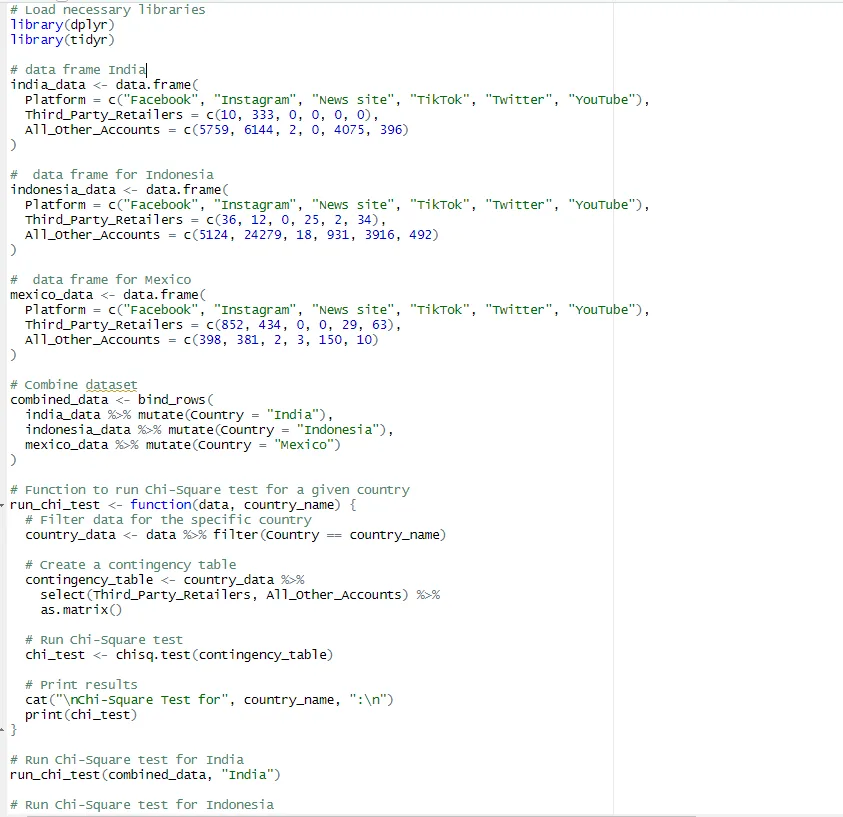
Chi-Square Module: R
Manually coded chi-square engine in R for cross-country statistical validations.
-
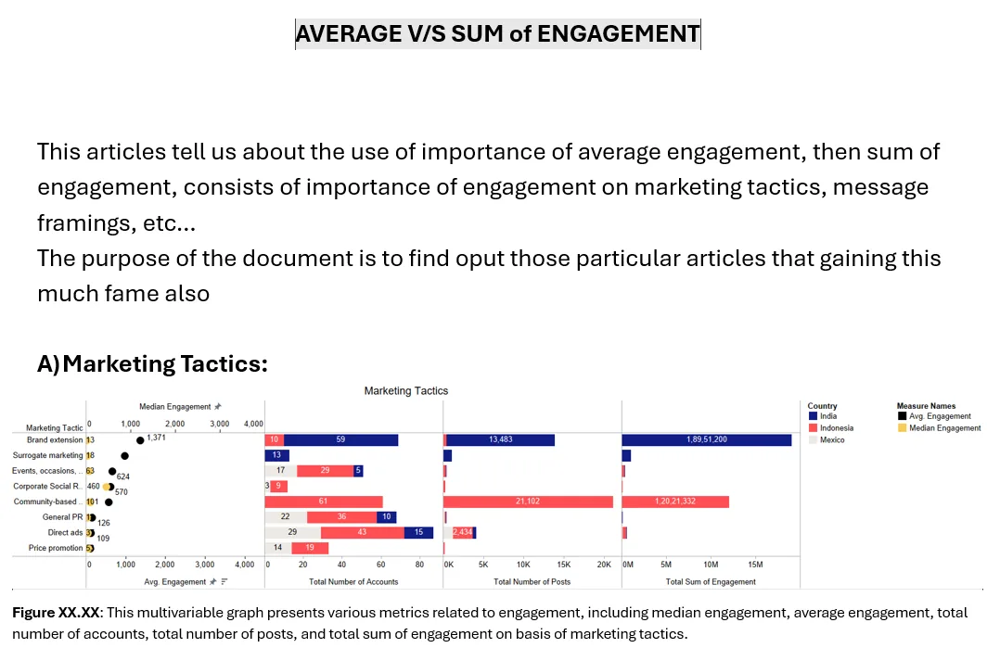
Average vs Median Engagement
True engagement = total likes per post. Not all high totals mean high impact.
-
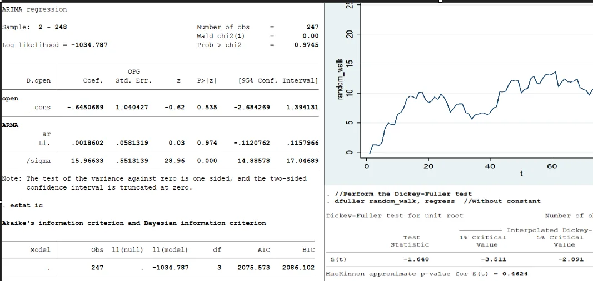
Time Series Simulation & ARIMA Forecasting
Simulated AR/MA processes, stationarity testing and ARIMA model selection in Stata.
-
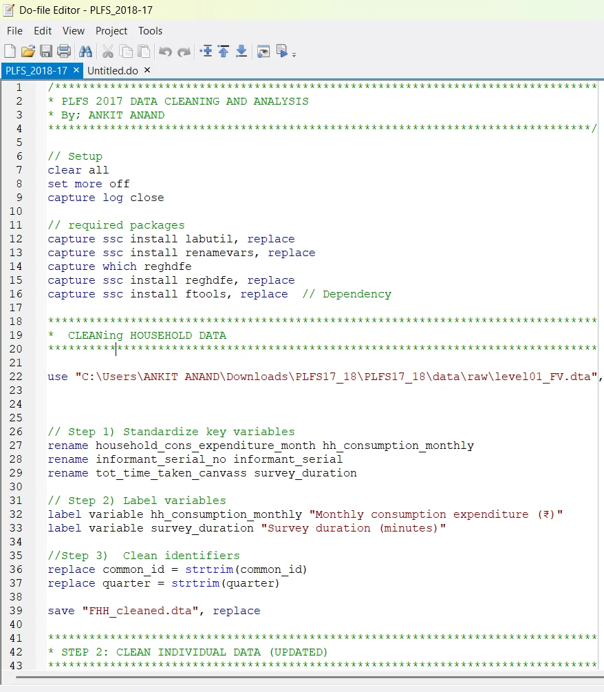
Demographic Modelling & Dynamic LaTeX Output
Stata-powered PLFS analysis with auto-generated LaTeX reports and visualizations.
-
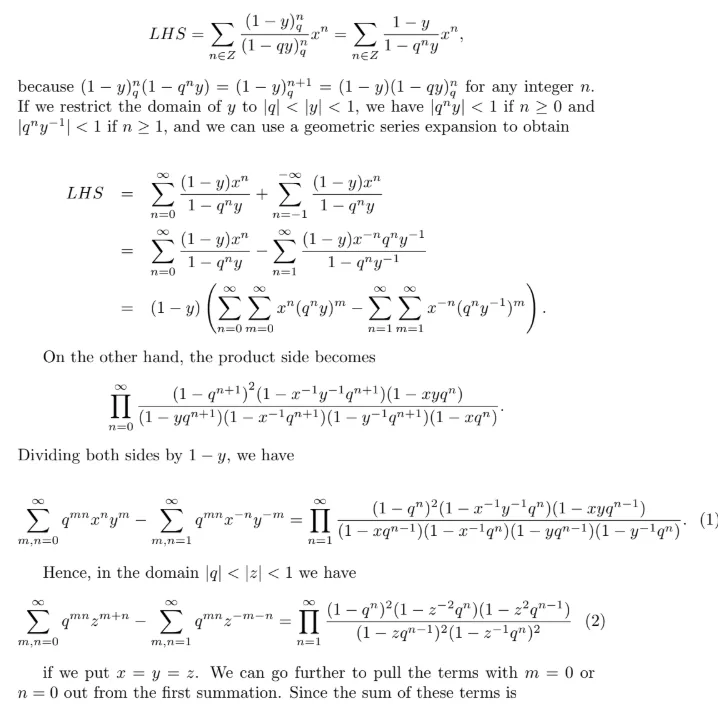
LaTeX Typesetting
Mathematical derivations and proofs typeset in LaTeX.
-
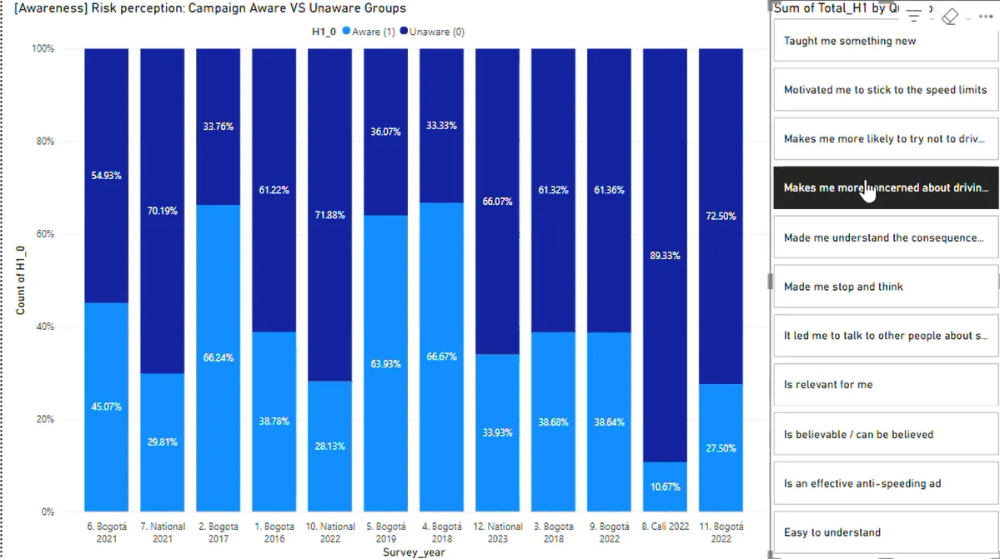
Behavioural Insights from WHO Road Safety Campaign
Power BI dashboard analysing ten years of behavioural data from WHO’s road-safety campaign in 9 Mexican cities.
-
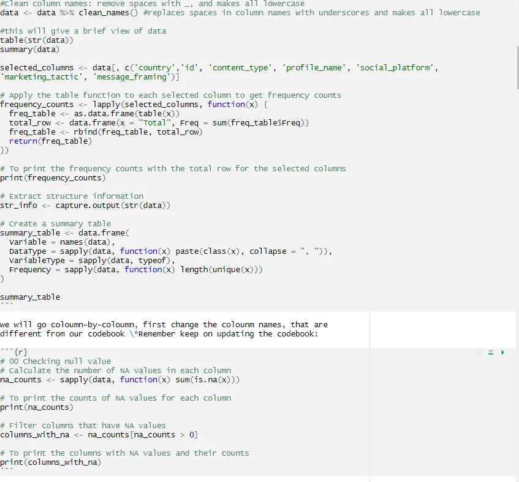
AutoCleanR: Intelligent Data QA-QC Pipeline
Automated R workflow to clean, validate, and transform large datasets with stepwise QA/QC.
-

Property Analysis Modelling
Real-estate forecasting and behavioural analytics model in R, predicting property price appreciation with 87% accuracy.